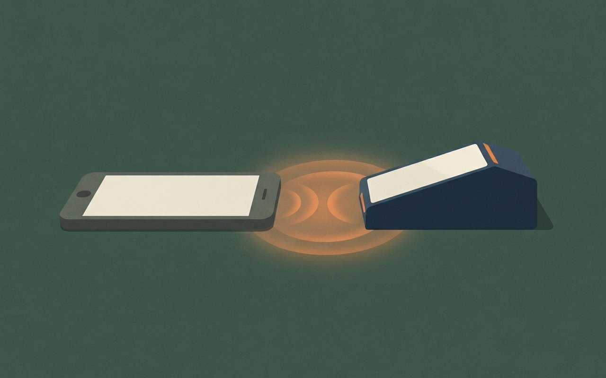

🎧 낭독 원고 보기
11월 9일 월요일, 데일리 브리프입니다. 오늘은 여섯 가지 소식을 전해 드립니다.
삼성 라이온즈가 12년 만에 한국시리즈 정상에 올랐습니다. 8일 대구 5차전에서 KT를 12대 1로 꺾고 4승 1패로 우승했고, 통산 9번째 우승입니다. 5회에 8점을 몰아냈고, 구자욱 선수가 타율 0.500, 1홈런, 6타점으로 시리즈 MVP에 뽑혔습니다. 뉴스1 보도입니다.
코스피는 6일 5,059.69로 마감해 6.02퍼센트 내렸고, 한 주 낙폭은 11.71퍼센트였습니다. 장중에는 4,900선까지 밀렸습니다. 외국인 순매도는 10조 3,810억 원으로 집계됐지만 집계 기간은 기사에 적혀 있지 않습니다. 삼성전자는 6일 18만 8,700원으로 일주일 새 17.6퍼센트 내렸고, 한국투자증권은 강한 지지선을 17만 5,000원으로 봤습니다. 코스닥도 5.03퍼센트 내렸습니다. 이번 주 관전 포인트는 코어위브 실적과 미국 CPI, PPI입니다. 월요일 장 결과는 아직 나오지 않았습니다.
국회예산정책처는 6일 본회의를 통과한 조작기소 특검의 예산을 약 380억 원으로 추계했습니다. 인건비가 155억 원, 운영비가 152억 원이고, 기사는 내란 특검 155억 원, 김건희 특검 155억 원, 채해병 특검 79억 원과 비교했습니다. 5월 추계라 실제 인원에 따라 달라질 수 있습니다. 한편 9일부터 예결위가 820조 9천억 원 규모 내년도 예산안 심사에 들어가며, 쟁점은 162조 원 규모 미래대응기금입니다.
트럼프 대통령은 CNN 인터뷰에서 이란 재공습 가능성이 매우 낮다고 말했습니다. 이란이 합의에 서명하느냐에 달렸고, 핵과 호르무즈 해협 조건을 거부하면 추가 군사행동이 가능하다고 경고했습니다. 역내에 항공모함 3척이 있고 교량 38개를 1시간 안에 파괴할 수 있다는 말도 했는데, 이란의 전력 수치와 함께 모두 트럼프 대통령 본인의 주장입니다. 뉴시스 보도입니다.
이스라엘 헤르조그 대통령이 야권의 아이젠코트에게 정부 구성권을 줄 예정입니다. 총리 추천은 아이젠코트가 67표, 네타냐후 총리가 46표였습니다. 연정이 실제로 꾸려질지는 아직 불확실합니다. 뉴스1 보도입니다.
카카오뱅크가 이르면 이달, 토스뱅크가 연내 애플페이를 도입한다고 한국경제가 보도했습니다. 2023년 현대카드 단독 도입 이후 처음 넓어지는 것입니다. 카드사가 애플에 내는 수수료는 결제액의 약 0.15퍼센트로 보도됐고, 시점은 모두 계획 단계입니다.
끝으로 오늘 서울 날씨입니다. 아침 최저 4도, 낮 최고 13도입니다. 서울 비 소식은 기사에 없고, 비는 남부와 제주 중심입니다.
이상으로 오늘의 데일리 브리프를 마칩니다. 자세한 내용과 출처는 카드에서 확인하세요.
優
스포츠 · 한국시리즈
삼성, KT 12-1로 꺾고 한국시리즈 4승 1패 — 12년 만의 우승, 구자욱 MVP
뉴스1에 따르면 삼성 라이온즈는 8일 대구 삼성라이온즈파크에서 열린 한국시리즈 5차전에서 KT를 12-1로 이겨 시리즈 전적 4승 1패로 우승했다. 12년 만의 정상 탈환이고 통산 9번째 우승이다.
5회에 8점을 몰아내 승부를 갈랐고, 구자욱이 시리즈 MVP로 뽑혔다. 구자욱은 시리즈에서 타율 0.500, 1홈런, 6타점을 기록했다. 11/8 브리프의 3승 1패(4차전 10-5) 뒤 5차전에서 시리즈가 끝났다.
- 5차전8일 대구 · 삼성 12-1 KT · 5회 8득점
- 시리즈삼성 4승 1패 · 12년 만의 우승 · 통산 9번째
- MVP구자욱 — 타율 0.500 · 1홈런 · 6타점
- 확인 한계본문은 뉴스1 단일 확인 · 우승 사실은 YTN 헤드라인과 일치 · 관중 수 등은 미확인
Marketing View · 마케터의 시선
뒤처지던 확률을 뒤집은 우승은 숫자보다 서사가 먼저 공유된다. 다만 이 카드의 사실은 전적과 기록까지다. 확률 통계 등 본문에서 확인하지 못한 수치는 싣지 않았다.
뉴스1 — 5차전·우승
뉴스1(11/8 17:26 업데이트) 단일 본문 · YTN(11/8 20:13) 우승 헤드라인으로 교차 (확인 2026-11-09)
삼성, 12년 만에
한국시리즈 우승
삼성이 8일 대구 5차전에서 KT를 12-1로 꺾고 4승 1패로 우승했어요. 통산 9번째 우승이고, 구자욱이 시리즈 MVP를 받았어요.
삼성|12|1|KT
4승 1패|한국시리즈 최종 전적
통산 9번째 우승 / 구자욱 MVP · 타율 0.500
落
증시 · 개장 전 점검
코스피 6일 5,059.69(-6.02%), 주간 -11.71% — 삼성전자 18만 8,700원, 외국인 순매도 10조 원대
뉴스1에 따르면 6일(금) 코스피는 5,059.69로 마감해 324.11p(6.02%) 내렸고, 한 주 낙폭은 11.71%였다. 코스닥은 644.27로 5.03% 내렸고 장중 코스피는 4,900선까지 밀렸다. 외국인 순매도는 10조 3,810억 원으로 집계됐으나 기사에 집계 기간은 적혀 있지 않다. 이번 주 관전 포인트로는 코어위브 실적과 미국 CPI·PPI가 꼽혔다.
삼성전자는 6일 18만 8,700원으로 일주일 새 17.6% 내렸고, 2~6일 외국인이 2조 1,943억 원어치를 순매도했다. 한국투자증권은 강한 지지선을 17만 5,000원으로 봤다. 월요일 장 결과는 이 카드를 쓴 시점에 나오지 않았다.
- 코스피(6일)5,059.69 · -324.11p(-6.02%) · 주간 -11.71% · 장중 4,900선까지
- 코스닥(6일)644.27 · -34.14p(-5.03%)
- 외국인순매도 10조 3,810억 원(집계 기간 미표기, 뉴스1)
- 삼성전자6일 18만 8,700원 · 일주일 -17.6% · 2~6일 외국인 순매도 2조 1,943억 원 · 한투증권 지지선 17만 5,000원
- 확인 한계월요일(9일) 개장 후 결과 미반영 ⚠ 변동 가능 · 두 기사 모두 뉴스1
Marketing View · 마케터의 시선
앞선 브리프가 하루 낙폭을 다뤘다면 이 카드는 한 주 단위로 본 기록이다. 하루 낙폭과 주간 낙폭은 기간이 달라 비교하지 않는다. 이 카드는 투자 권유가 아니다.
뉴스1 — 코스피 주간 마감 뉴스1 — 삼성전자 지지선
뉴스1(11/8 06:00·11/8 13:46 업데이트) · 11/7 브리프의 6일 -6.02%와 같은 날 수치, 이번에는 주간·삼성전자 중심 (확인 2026-11-09)
코스피 한 주 -11.71%,
삼성전자 18만원대
6일 코스피는 5,059.69로 마감했고 한 주 동안 11.71% 내렸어요. 외국인 순매도가 10조 원을 넘었다고 집계됐어요.
10조 3,810억 원|외국인 순매도(집계 기간 미표기)
삼성전자 6일 18만 8,700원 / 이번 주 관전: 코어위브 실적·미 CPI
算
정치 · 특검·예산
조작기소 특검 예산 약 380억 원 추계 — 9일부터 예결위, 820조 9천억 원 예산안 심사
뉴스1에 따르면 6일 본회의를 통과한 조작기소 특검법(재석 168명 중 찬성 167·반대 1)의 예산을 국회예산정책처가 약 380억 5,600만 원으로 추계했다. 인건비 155억 원, 운영비 152억 원이며 나머지 항목은 기사에 세부가 없다. 기사는 내란 특검 155억 원, 김건희 특검 155억 원, 채해병 특검 79억 원과 비교했다. 5월 추계이고 실제 인원에 따라 달라질 수 있다.
YTN에 따르면 9일부터 예산결산특별위원회가 820조 9천억 원의 내년도 예산안 심사에 들어간다. 쟁점은 162조 원 규모 미래대응기금이다. 국민의힘은 조작기소 특검법에 반발해 장외투쟁을 이어 가고, 민주당은 이르면 이번 주 본회의에서 민주유공자법 등 쟁점 법안을 처리할 예정이며 국민의힘은 무제한 토론으로 맞설 계획이라고 했다.
- 특검법11/6 본회의 통과 · 재석 168명 중 찬성 167 · 반대 1(뉴스1)
- 예산 추계약 380억 5,600만 원 · 인건비 155억 · 운영비 152억(예산정책처, 5월 추계)
- 비교내란 특검 155억 · 김건희 특검 155억 · 채해병 특검 79억(기사가 제시한 3건)
- 예결위9일 심사 시작 · 내년도 예산안 820조 9천억 원 · 쟁점 162조 원 미래대응기금(YTN)
- 확인 한계추계액·표결은 뉴스1 단일, 예산안 일정은 YTN 단일 · 실제 비용은 달라질 수 있음 ⚠ 변동 가능
Context · 맥락 읽기
금액만 보면 크기를 가늠하기 어렵다. 기사가 함께 든 다른 특검 예산이 비교의 기준이지만 3건뿐이다. 정치적 평가가 아니라 추계 숫자와 일정만 옮겼다.
뉴스1 — 특검 예산 추계 YTN — 예결위 심사 시작
뉴스1(11/8 19:14)·YTN(11/9 00:52) 각각 단일 본문 · 11/6 브리프의 필리버스터 뒤 통과·예산 추계는 새 전개 (확인 2026-11-09)
조작기소 특검 예산
약 380억 원 추계
국회예산정책처가 조작기소 특검 예산을 약 380억 원으로 추계했어요. 9일부터는 예결위가 820조 9천억 원 예산안 심사에 들어가요.
820조 9천억 원|9일 심사 시작하는 내년도 예산안
특검 예산 약 380억 원(5월 추계) / 쟁점 162조 원 미래대응기금
鷹
국제 · 미국·이란
트럼프 "이란 재공습 가능성 매우 낮다" — 합의 서명 여부에 달렸고, 거부하면 추가 군사행동 경고
뉴시스에 따르면 트럼프 대통령은 CNN 인터뷰(약 20분)에서 이란에 대한 재공습 가능성이 "매우 낮다"고 다섯 번 되풀이했다. 이란이 "매우 강력한 합의"에 서명하느냐에 달려 있고, 핵·호르무즈 해협 조건을 거부하면 추가 군사행동이 있을 수 있다고 경고했다. 11/8 브리프의 방공시설 타격 뒤 나온 발언이다.
트럼프는 역내에 항공모함 3척이 있고 교량 38개를 1시간 안에 파괴할 수 있다고 말했으며, 이란의 미사일 능력은 약 10%, 드론은 약 15% 수준이라고 주장했다. 이 수치는 모두 트럼프 본인의 발언·주장이다. 카타르 정부는 7일 트럼프가 에미르와 통화했다고 발표했다.
- 발언재공습 가능성 "매우 낮다"(5회 반복) · 이란의 합의 서명에 달림
- 경고핵·호르무즈 조건 거부 시 추가 군사행동 가능
- 전력 주장역내 항모 3척 · 교량 38개 1시간 내 파괴 · 이란 미사일 약 10%·드론 약 15%(모두 트럼프 주장)
- 외교카타르 정부: 7일 트럼프–에미르 통화(뉴시스)
- 확인 한계CNN 원문 미열람 · 뉴시스 요약 단일 · 이란 측 반응은 확인하지 못함 ⚠ 변동 가능
Context · 맥락 읽기
공습 가능성을 낮게 말하면서 동시에 거부 시 군사행동을 경고했다. 두 메시지는 함께 읽어야 한다. 전력 수치는 검증되지 않은 발언이라 사실로 읽지 않는다.
뉴시스 — CNN 인터뷰 요약
뉴시스(11/9 04:27) 단일 본문, CNN 인터뷰 인용 · 이란 측 입장은 해당 기사에 없음 (확인 2026-11-09)
트럼프 "이란 재공습
가능성 매우 낮다"
트럼프가 CNN 인터뷰에서 재공습 가능성이 매우 낮다고 말했어요. 이란이 합의에 서명하는지에 달렸고 거부하면 군사행동을 경고했어요.
5번|"가능성 매우 낮다" 되풀이한 횟수
항모 3척 등 전력 수치는 트럼프 본인 주장 / 단일 출처
政
국제 · 이스라엘 정국
이스라엘 대통령, 야권 아이젠코트에 정부 구성권 부여 예정 — 총리 추천 67 대 46으로 네타냐후 앞서
뉴스1에 따르면 헤르조그 대통령이 야권 지도자 아이젠코트에게 정부 구성 권한을 부여할 예정이다. 총리 추천은 아이젠코트가 67표, 네타냐후 총리가 46표였다. 총선 결과는 4일 통보됐다.
연정 구성 기한은 기사에 28일, 연장 시 최대 42일로 나온다(두 수치의 관계는 기사가 설명하지 않았다). 강경파가 아랍계 정당과의 연정에 반대하는 것이 쟁점으로 꼽혔다. 연정이 실제로 꾸려질지는 아직 불확실하다.
- 권한 부여헤르조그 대통령 → 아이젠코트 정부 구성권 부여 예정(뉴스1 3줄 요약)
- 추천 표아이젠코트 67 · 네타냐후 46
- 일정총선 결과 통보 11/4 · 연정 구성 기한 28일 · 연장 시 최대 42일
- 쟁점강경파의 아랍계 정당 연정 반대
- 확인 한계뉴스1 단일 본문 · 부여 완료 보도는 확인하지 못함 · 아이젠코트의 이름은 기사에 성만 표기 ⚠ 변동 가능
Context · 맥락 읽기
구성권을 받는 것과 정권이 바뀌는 것은 다른 이야기다. 연정 구성에는 기한이 있고 표 계산이 남아 있다. 확인된 것은 추천 표 집계까지이고, 부여는 예정 단계다.
뉴스1 — 정부 구성권
뉴스1(11/8 14:29 업데이트) 단일 본문 · 로이터는 사진 크레디트로만 표기 (확인 2026-11-09)
이스라엘, 야권에
정부 구성권 부여 예정
이스라엘 대통령이 야권의 아이젠코트에게 정부 구성권을 줄 예정이에요. 총리 추천은 아이젠코트 67표, 네타냐후 총리 46표였어요.
67 대 46|총리 추천 표(아이젠코트·네타냐후)
연정이 꾸려질지는 아직 불확실 / 기한 28일, 연장 시 최대 42일
支
금융 · 애플페이
카카오뱅크·토스뱅크 애플페이 도입 — 현대카드 독점 깨진다, 카뱅은 이르면 이달
한국경제에 따르면 카카오뱅크가 이르면 이달, 토스뱅크가 연내 애플페이를 도입한다. 2023년 현대카드가 단독으로 도입한 뒤 나온 첫 확대다. KB국민·BC카드는 약관 심사 중이고 신한카드는 수정 내용을 다시 제출한 상태다.
카드사가 애플에 내는 수수료는 결제액의 약 0.15%로 보도됐다. 사용자 입장에서 달라지는 점과 도입 시점의 세부 일정은 기사에서 확정되지 않았다.
- 카카오뱅크이르면 이달 도입
- 토스뱅크연내 도입
- 카드사KB국민·BC 약관 심사 중 · 신한 수정 후 재제출
- 수수료카드사가 애플에 내는 몫 결제액의 약 0.15%
- 배경2023년 현대카드 단독 도입
- 확인 한계한경 단일 · 시점은 '이르면'·'연내' ⚠ 변동 가능 · 이용자 혜택·한도는 미확인
Marketing View · 마케터의 시선
결제 수단이 늘면 선택지가 넓어지지만, 지금 확정된 것은 계획 단계다. 실제 이용 가능 시점은 공식 공지로 확인하는 것이 먼저다.
한국경제 — 인뱅 애플페이
한국경제(11/8 17:29 입력·11/9 00:04 수정) 단일 본문 (확인 2026-11-09)
카카오뱅크·토스뱅크
애플페이 도입
카카오뱅크는 이르면 이달, 토스뱅크는 연내 애플페이를 들여온다고 해요. 2023년 현대카드가 단독 도입한 뒤 처음 넓어지는 거예요.
0.15%|카드사가 애플에 내는 수수료(결제액 기준)
A smartphone resting near a contactless payment terminal with a soft glowing ripple between them, flat illustration, no text, no logos
